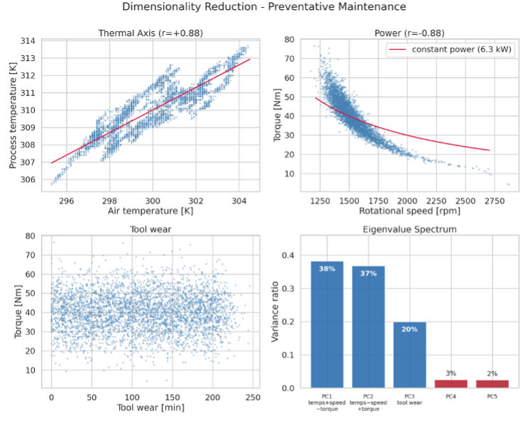
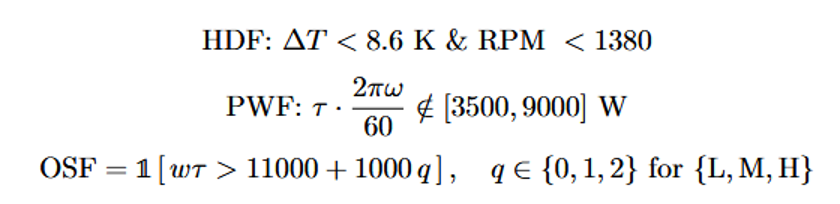
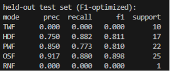
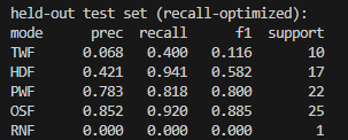

Prepared by: Golnaz Tojar, Cameron Collins, Andrew Flint, Yibo Fu, and Connor Pan
Our project initially focused on the Global Coffee Health Dataset. However, after examining the data, we found that it contained numerous missing values and that most features were binary, limiting the scope of our analysis. We therefore pivoted to the AI4I 2020 Predictive Maintenance Dataset, which offers complete data, continuous sensor measurements, and a more suitable benchmark for developing and comparing machine learning models. The onset of the AI/ML era and the expansion of Internet of Things (IoT) devices have enabled a new era of increased predictive maintenance capabilities. Predictive maintenance, as described by IBM, is “a type of maintenance that uses operational data and real-time condition monitoring to predict when assets are likely to fail.” Predictive maintenance makes use of advanced machine learning algorithms to identify changes in component states (ie. temperature, duration, load, etc.) to assess the likelihood of component failure. This can in turn be used to inform smart maintenance protocols to prevent system components from failing while in use. This form of predictive maintenance deviates from traditional protocols of preventative maintenance which relies on fixed schedules based on average performance metrics across a component. Preventative maintenance on the other hand uses the modern data-driven methods to provide specific insights for each component and recommend maintenance when applicable [1]. In particular, in a report entitled “AI Predictive Maintenance for the Airline Industry” by HCLTech, the authors claim that predictive maintenance is not just an upgrade, but rather a core pillar of next generation aviation. Implementation of predictive maintenance in the aviation industry has on average led to a 15-30% reduction in unscheduled maintenance as well as a 10-20% reduction in maintenance operating costs among other maintenance-related benefits [2]. While this is just a specific example, predictive maintenance is being integrated in many different industries simultaneously. But the open-ended question remains of what are the best models and data processing techniques to accurately predict machine failures?
Unexpected machine failures can lead to costly production downtime, reduced productivity, and increased maintenance expenses in manufacturing systems [3,4]. Traditional maintenance strategies, such as scheduled preventive maintenance or corrective maintenance after failure, often result in unnecessary servicing or unexpected equipment breakdowns. Predictive maintenance aims to overcome these limitations by using machine operating data to anticipate failures. In this project, we use the AI4I 2020 Predictive Maintenance Dataset [5], which contains 10,000 machine operating records with six process- and sensor-related features: product quality type, air temperature, process temperature, rotational speed, torque, and tool wear. The dataset also includes a binary target indicating whether a machine failure occurred, as well as the specific failure modes, including Tool Wear Failure (TWF), Heat Dissipation Failure (HDF), Power Failure (PWF), Overstrain Failure (OSF), or Random Failure (RNF). To address this problem, several supervised and unsupervised machine learning algorithms, including Random Forest, Logistic regression, and Decision Tree are proposed. The goal is to identify a model that provides accurate and reliable failure prediction while maintaining good generalization to unseen machine operating conditions.
The first learning algorithm that we implemented was a random forest multi-output classifier with a balanced class weight to counteract the label imbalance naturally present in the realm of predictive maintenance. Our feature set was the following six indicators: Type, Air Temperature, Process Temperature, Rotational Speed, Torque, and Tool Wear. This random forest classifier was trained by building hundreds of decision trees on random subsets of the data. Each tree is built by randomly selecting a subset of the feature set and splitting based on those features only. At conclusion of the algorithm, each tree forms its own prediction and these are aggregated and averaged across all trees. In our implementation, we chose to tune our hyperparameters over the following grid: n_estimators: [200, 400], max_depth: [None, 8, 16], min_samples_leaf: [1, 3, 5], and max_features: [“sqrt”, 0.5]. The n_estimators represents the number of individual trees built (later aggregated), max_depth refers to the depth of each tree, min_samples_leaf is the minimum number of observations to form a leaf node, and max_features is the number of features used in each tree where “sqrt” is ~2.4 and 0.5 would use 3 of the 6 features. This grid sweep was done to find the best set of hyperparameters using two different performance metrics: f1 score and recall. Those hyperparameters were then used on the tree to evaluate its performance with the test set. In addition, to perform our exploratory data analysis (EDA), we implemented principal component analysis. We used this to determine which features were most impactful on the variance of the failure modes. PCA determined that the feature space effectively collapses into three dimensions – temperature, power (rotational speed and torque), and tool wear.

We were able to use this to reverse-engineer the rules for the creation of the dataset; namely, that the HDF, PWF, and OSF modes can be predicted with 100% accuracy. In future work, we plan to use these rules to create a synthetic data generator for this application, which will be able to create a more uniform distribution of failures/nonfailures, allowing for improved accuracy in future model iterations.

We also implemented the Dataset and Datapoint classes, which are used in data preprocessing. Dataset has members trainSet and testSet, which are constructed by 80/20 random selection. The random selection is seeded (and the seed saved), which allows for individual train/test splits to be saved for benchmarking across different model generations. Dataset is comprised of Datapoint objects, which inherits both the predictive features and the failure mode features, and is referenced by row identifier. Because this dataset is synthetic, we did not have to clean the dataset or fix any NaN entries, which was helpful.
Of the 10,000 total observations, 339 are flagged as Machine Failure confirming that failure is a rare-event classification problem which is unevenly distributed across the failure modes. The F1 and recall optimized sets of hyperparameters yielded the results in Figures 1 and 2, respectively. As can be seen, there is a clear tradeoff between optimizing for recall and for F1 score. The recall optimized hyperparameters attained a much higher overall recall than did the F1 optimized hyperparameters, but at a substantial cost of precision, which is reflective of a mediocre or poor model at first glance. This suggests the random forest has trouble balancing precision and recall. However, when class representation is considered, a more clear picture emerges. Since failure is a mere 3.39% of observations spread over five distinct class labels with varying frequency, it becomes clear that the aggregate score is a result of a few data-starved labels dragging down the performance. On the most frequent labels (HDF, OSF and PWF), the F1 optimized model scored F1 of 0.811, 0.898, and 0.810, respectively with precision and recall both above 0.750. These modes contained enough observations for the random forest to actually learn generalizable splits. TWF and RNF, conversely, proved to be effectively unlearnable with F1 score = 0.000 on both for the F1 optimized set of hyperparameters, and the recall optimized model still had a difficult time flagging these. This reflects a true sample size limitation which we will take a number of measures to counteract in future work.


| Name | Proposal Contributions |
|---|---|
| Golnaz Tojar | Research and wrote problem definition for project and dataset. |
| Cameron Collins | Implemented and wrote-up random forest multi-output classifier. |
| Andrew Flint | Wrote introduction and background and compiled GH page report. |
| Yibo Fu | Analyzed results from preliminary models and wrote results section. |
| Connor Pan | Implemented and wrote-up PCA for exploratory data analysis. |